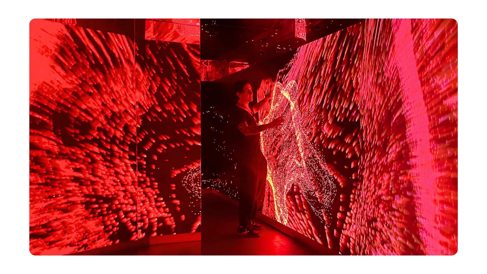
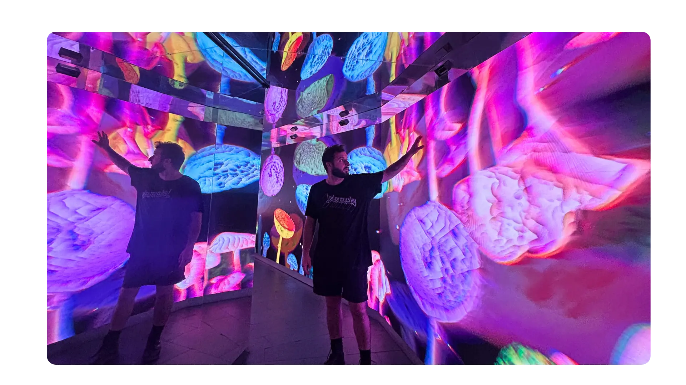

Alma Digital
Alma Digital

Commission
Pacha Ibiza
Interactive Installation
Ficha técnica
Formato
Interactive Installation
Línea
Encargo
Tecnología
Projection mapping · Motion tracking · Depth mapping
Encargado por
Gola Studio & Pacha Ibiza
Concepto
A series of interactive installations for Pacha Ibiza's summer season, transforming a 10-meter LED tunnel into an immersive responsive environment. Fifteen custom interactive installations were created using motion tracking and depth mapping technology, each tailored to complement Pacha's signature events.
Registro — 3 imágenes


Reel
Créditos
- Produced by: Alma Digital Studio & Gola Studio
- Visuals by: Vicente Manzano & Beltrán Lihn
- Interactivity by: Vicente Manzano & Beltrán Lihn
- Software Development by: Beltrán Lihn